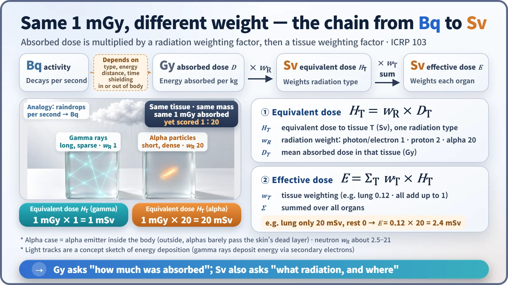
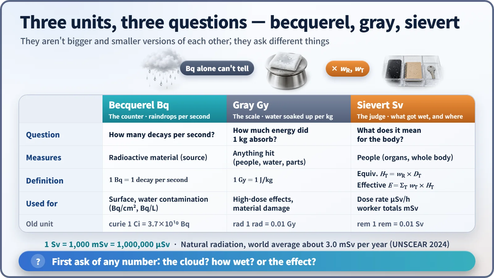

Nuclear & Radiation Basics · 017
Raindrops, Soaked Clothes and the Chance of a Cold — Becquerel, Gray and Sievert Explained
Becquerels count the raindrops, grays weigh how wet you got, and sieverts ask what kind of rain fell and where.
The becquerel counts decays per second in a radioactive material, the gray measures the energy absorbed per kilogram, and the sievert weighs that energy by radiation type and body part. They answer three different questions, so a number in one unit cannot simply be read off in another. [1]
Why one rain shower gives you three numbers
"How much rain did you get?" hides three questions. How many raindrops fell each second? How much water did your clothes soak up? And is that enough to give you a cold? They're linked but not the same: under an umbrella you barely get wet however hard it rains, and a wet back is a different story from a wet bag with your phone inside.
The becquerel (Bq), gray (Gy) and sievert (Sv) answer exactly these three questions, one each. The difference between radioactivity (the property of giving off radiation) and radiation (the energy actually flying through space) is built right into the units.
The cloud's number: a becquerel is one "drip" per second
The becquerel counts how many times the nuclei in a radioactive material decay each second; one decay per second is 1 Bq. It's named after Henri Becquerel, who discovered radioactivity.
The becquerel counts only raindrops. It says nothing about whether each drop was a fine mist or a heavy splash, or who got rained on. So "Is 1,000 Bq dangerous?" can't be answered from that number alone. The natural potassium inside your own body undergoes thousands of decays every second.
Your number: a gray is the energy soaked up by 1 kg
The gray measures the energy actually absorbed by whatever receives the radiation: 1 Gy = 1 J/kg. It's a pure physical quantity that works the same for a body, water or an electronic part.
As heat, 1 Gy is tiny: 1 J into 1 kg of water raises its temperature by only about 0.00024 °C. It still has effects because the energy arrives as ionization, snipping molecular chains at specific points, rather than as even warming. [1]
There's no fixed conversion from raindrops (Bq) to wetness (Gy). It depends on what radiation comes out and how strongly, how close you were and for how long, any shielding, and whether the source was outside the body or got inside it.
The effect number: a sievert makes two corrections
The sievert judges what absorbed energy means for the human body, taking the gray value through two corrections.

First, the kind of rain: the radiation weighting factor (w_R). Gamma rays, X-rays and beta particles spread their energy like a drifting mist, so w_R is 1. Alpha particles are heavy and highly charged and dump their energy over a very short distance, like a thick jet hammering one spot; the damage is hard for cells to repair, so w_R is 20. The same 1 mGy becomes 1 mSv for gamma rays but 20 mSv for alpha particles. This organ-level value is the equivalent dose. Alpha particles can't get through paper or the skin's dead outer layer, so this matters when an alpha emitter gets inside the body.
Second, which part got wet: the tissue weighting factor (w_T). The International Commission on Radiological Protection (ICRP) assigns weights that add up to exactly 1:
| Tissue weighting factor | Organs and tissues |
|---|---|
| 0.12 each | red bone marrow, colon, lung, stomach, breast, remainder tissues |
| 0.08 | gonads |
| 0.04 each | bladder, oesophagus, liver, thyroid |
| 0.01 each | bone surface, brain, salivary glands, skin |
Multiply each organ's equivalent dose by its weight and add them up to get the effective dose. If the lung alone received 20 mSv, the effective dose would be 0.12 × 20 = 2.4 mSv. [2]
So is a sievert "how much harm I took"?
No. Effective dose isn't a precise measure of one person's harm. It uses a standard human model and averages to compare and manage long-term risks such as cancer at low doses, a common currency for radiation protection. Effects that appear right away after a large dose, such as burns, are discussed in grays instead. [2]
With gamma rays hitting the whole body evenly, gray and sievert numbers come out the same, which makes them easy to confuse. With alpha particles, or partial-body exposure, they can be far apart.

For scale: 1 Sv = 1,000 mSv = 1,000,000 μSv, and people worldwide receive on average about 3.0 mSv per year from natural radiation (2024 assessment by the United Nations Scientific Committee on the Effects of Atomic Radiation, UNSCEAR). Meter readings in the news are usually μSv per hour, so match units before comparing with an annual figure. The old units are the curie (1 Ci = 37 billion Bq), rad (0.01 Gy) and rem (0.01 Sv). [3] [4]
How a nuclear plant puts all three to work
Contamination on floors or equipment is checked in becquerels (Bq/cm²), the radiation level in a work area in microsieverts per hour (μSv/h), and each worker's accumulated dose in millisieverts (mSv). Radiation damage to electronics or materials is judged in grays. When you see a number, first ask: is this about the cloud, about how wet things got, or about the effect?
Three lines to remember before you fold the umbrella
Becquerel (Bq): decays per second, the raindrops falling. Gray (Gy): energy absorbed per kilogram, the water soaked up. Sievert (Sv): the effect, corrected for radiation type (w_R) and body part (w_T).